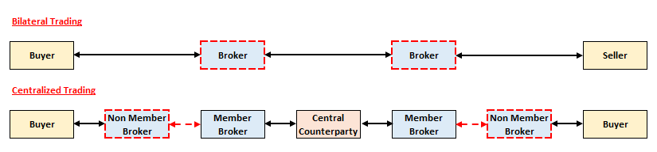

Derivative Overview¶
The purpose of this section is to cover the following learning objectives:
- 1a - Understand the payoffs of basic derivatives instruments
- 1b - Be able to identify the key differences between forwards and futures
- 1c - Be able top compare European, American, Bermudan, Asian options, and various exotic options
- 1d - Understand the mechanics of derivatives trading
Introduction to Derivatives¶
Derivatives are financial contracts between two parties that agree to a future transaction(s). The value of the contract is derived from (hence the name) the value of an underlying variable - both financial (EG. stock, interest rates) or non-financial metrics (EG. weather).
The Payoff of a derivative is the net cashflow received from the perspective of the contractholder at the time of the future transaction(s). Given that the value of the underlying variable is unknown, there is a range of possible payoffs that is usually expressed as a function of the underlying variable.
Note
If the transaction involves the delivery of an asset (EG. Stock, Corn), the payoff assumes that asset is either bought or sold at the market price at the time of the transaction.
Warning
Payoffs EXCLUDE the cost of the derivative. Thus, it is NOT THE SAME as the Profit of the derivative.
Trading Derivatives¶
Generally speaking, the buyer of the derivative contract is said to be taking a long position while the seller of the contract (counterparty) is known as taking a short position. Taking both a long and short position on an identical contract will net out the obligations of the two positions, resulting in both positions being closed.
There are two main markets to trade derivatives:
| Exchange Traded Market | Over-the-Counter Market |
|---|---|
| Standardized contracts only | Standardized & bespoke contracts |
| Centralized clearing only | Centralized or Bilateral clearing |
| More transactions, smaller sizes | Fewer transactions, larger sizes |
Bilateral clearing refers to two counterparties directly trading with one another while Centralized clearing involves a Centralized Counterparty to step in and "break" the relationship between buyer and seller where:
- CCP will become the buyer to the seller
- CCP will become the seller to the buyer
- Form of Novation (contract replacement) where the original buyer and seller no longer have a legal relationship
Only CCP broker members can trade with the CCP. If the current broker is not a member, the business can be funneled through a member broker to get the trade cleared.

Market Makers¶
Since CCPs only REPLACE contracts, there needs to have been an original counterparty in the first place. This is typically achieved through Market Makers, who continuously buy and sell assets (aiming to sell for slightly more than what it was bought for), readily acting as the counterparty to most trades, providing liquidity to the market.
Warning
Not all trades have market makers as a counterparty, it is possible to match with another trader.
One market might have multiple market makers, so multiple trades might match with different market makers.
Key trading terminology:
- Bid Price - Amount that a prospective buyer would pay
- Ask Price - Amount that a prospective seller would require
The practical interpretation is that we are the counterparty:
- Our buyer bids (Bid price = our selling price)
- Our seller asks (Ask price = our buying price)
The Bid and Ask prices listed on most platforms are typically the highest Bid and lowest Ask price of all the open orders on the platform. They are best bid and ask prices at the moment. However, even the best Bid price is always lower than the Ask price; the gap is known as the Bid-Ask-Spread. An easy way to remember is that it is in ascending order - the lower bid price comes first in the name.
Note
Intuitively, any prospective buyer and seller with overlapping bid and ask prices would have already matched and have their trades cleared. Thus, the outstanding orders would NOT have matching bid and ask prices, where bid is lower than ask (if not the trade would have cleared). The Market Price is therefore the last overlapping bid and ask price that matched.
In order to continuously provide bid and ask quotes, market makers have to hold on to some level of inventory of the traded asset - it is impossible to immediately find a new buyer for each seller, vice-versa. In doing so, they take on some market risk as the price of the stock could move adversely during this time. Thus, they charge a risk premium in their quotes, with Ask prices being higher than their bid prices, targeting to earn the spread.
- Price Volatility - Highly volatile stocks increase the market risk borne, increasing the spread
- Liquidity - Lower liquidity markets require require market makers to hold onto the assets longer, exposing them to more risk, increasing the spread
- Competition - Presence of other market makers will decrease spreads as each tries to win flows from each other
Market makers earn more when their trading volume (both buying and selling to offset the position) is higher. However, lowering the spread to gain more volume might result in insufficient funds to cover the risk, resulting in losses instead. Thus, many market makers are turning to high frequency trading to process trades faster, thus winning orders from competition without having to compromise on spread.
Large banks typically act as as market makers for commonly traded derivatives.
OTC Bilateral Trading¶
Bilateral trading in OTC markets involve two parties directly dealing with each other. However, without a centralized entity to manage the trade, the two parties must agree on the specific terms of the contract. Most parties agree to use standard contract template known as a Master Agreement to minimize legal negotiations. The template is provided for by the International Swaps and Derivatives Association (ISDA) to make the OTC market safer and more efficient.
Exchange Traded CCP¶
Systematic Risk¶
To understand the benefits of CCPs, it is important to first understand the risks of trading bilaterally:
- Each party is directly exposed to the credit risk of their counterparty (another instituition)
- If one party defaults, their counterparty is likely to experience a loss, which could cause them to default as well
- All their counterparties may experience losses and potentially default as well; so on and so forth
- This is known as Systematic Risk, where the default of one entity leads to a ripple effect that causes other entities to default as well, ultimately leading to a collapse of the financial system
CCPs centralize the structure, converting it into a single point of failure that is better positioned to be managed and hence less likely to result in a system wide collapse:
- Requires Margin for each trade; margin is a form of collateral to cover the potential losses or defaults
- Requires contribution to a Guaranty Fund that may be used when margin is insufficient in the event of a default
- These requirements increases the amount of collateral, which reduces the likelihood of default
- Since each party is less likely to default, the CCP itself is less likely to fail and hence lower systematic risk
Margin¶
As mentioned, one of the primary methods that CCPs use to manage credit risk are via Margins. There are several key terminologies:
- Initial Margin (IM) - Amount that must be posted when initially entering the contract
-
Maintenance Margin - Minimum amount required in the margin account to keep the contract in-force
-
Variation Margin - Amount that is added/subtracted from the margin account to reflect gains/losses
-
Margin Call - Request to post more margin when the margin account falls below the maintenance margin level
Margin requirements are determined by the CCP using mathematical models. Generally speaking, IM is set such that it can cover potential losses 99% of the time; MM is typically set around 75% of the IM.
Changes in margins are typically calculated only once at the end of each trading day, known as a Daily Settlement. However, if there are large price movements during the day, margin can be calculated during the day itself (intraday) Margin call anytime?
Note
The purpose of any form of collateral is to ensure that an entity does not default on its obligations. Thus, only derivatives which imposes an obligation on the contract owner require margin.
An option holder has a right but no obligation to buy or sell, while an option write has an obligation (if exercised) to buy or sell. Thus, option writers are typically required to post margin while option holders are not.
Warning
Margin posted using an asset (rather than cash) will be subject to a Haircut, where only a fraction of its market value at the time of posting will count towards margin.
The primary purpose of collateral is to be used to recoup losses in the event of a default:
- Non-cash assets experience some level of price volatility and has the potential to drop before being sold, thus preventing its full value from being utilise
- Non-cash assets need to be sold (typically within a short period) thus less liquid assets may not be able to be utilized for its full value
Safe assets such as US T-bills typically have a small haircut (~10%) while riskier assets such as Shares have a larger haircut (~50%).
The clearing house requires each member broker to post margin
Posting margin is a requirement of the CCP to its Broker members. Each member then requires its traders to post margin
Intraday settlement Member and broker
Client to broker (Initial margin)
Unlike securities trading (where traders normally have to pay the full value of the asset, up-front) derivatives traders can get full exposure to an asset by “trading on margin” – that is, only paying a percentage of the value of the underlying asset, upfront. In this sense margin is often seen as leverage.
The fundamental precaution is for the exchange to hold sufficient funds on behalf of a trader to offset any potential future losses that are incurred between the time of a potential default and the closing out of the position.
Default >> will close position
MTM resets losses, clean slates
Need to be clear on the mechanics of default
Fungibility for netting Default management can easily clear Single price for margin
CCPs only accept standardized contracts to ease the management of their portfolio.
Bilateral also need to clear CCP ISDA, CSA